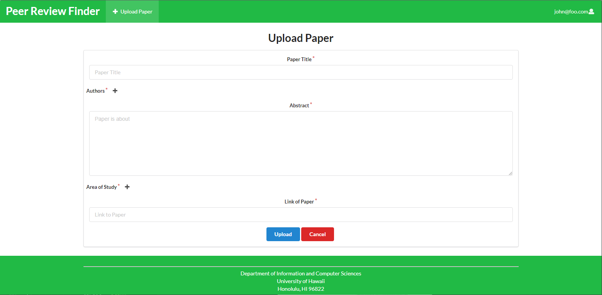
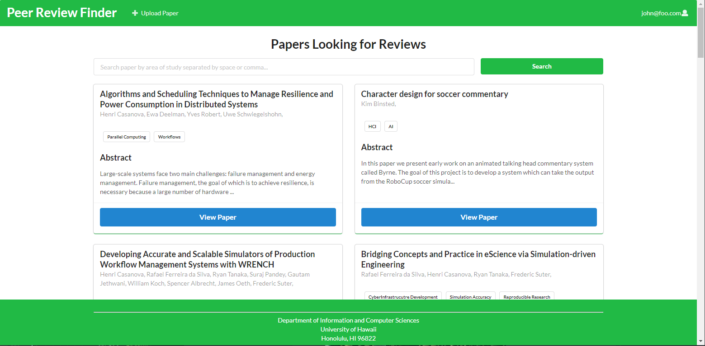

Peer Review Finder

Overview

What I learned from the experience
When doing this project, I have many other research and work also going on on the same time. This make it very difficult to handle, until I plan out what to do each week. As all the other project I have done in the past, time management always is a key of success. It will help plan out the process and time needed than manage time for it in the week, so due date can be meet. Also, Teamwork was very important in this project too. In the start of the project, our team have created many task/ticket to be done for the milestone, thought everything should go smoothly. However, a problem was there: some of the ticket required the other ticket to be finish. THis cause some of us need to wait for the other ticket to finish before. Our team learn from that mistake and start creating ticket that is related together and create more ticket, so wait is not needed.
With this project, my teamwork and time manage skill have improve much more than before. Now I will use google calendar to plan out my schedule, So heavy load of work can be finish in a timely manner. And using project board and creating task more detail and story ticket make it more easier for people to understand what the ticket want and needs.

What I contributed to the project and problem I encounter
In this project, I mainly work on the back end and the displaying paper functionality for the project. I Created the upload paper form to allow user to upload paper and displaying it on the view paper page. Also, adding filter to the view paper page and my paper page, so uploaded and review paper will not be show to users. Help fix bug and cleaning up some UI. One of the biggest problem was that one of our teammate got special event happening making we are one man short. And work was need to be divide. This cause some slow down on the project but everything was figure out at the end.